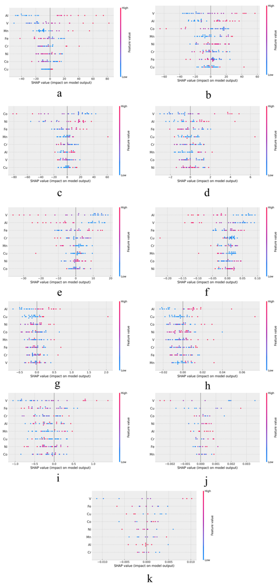
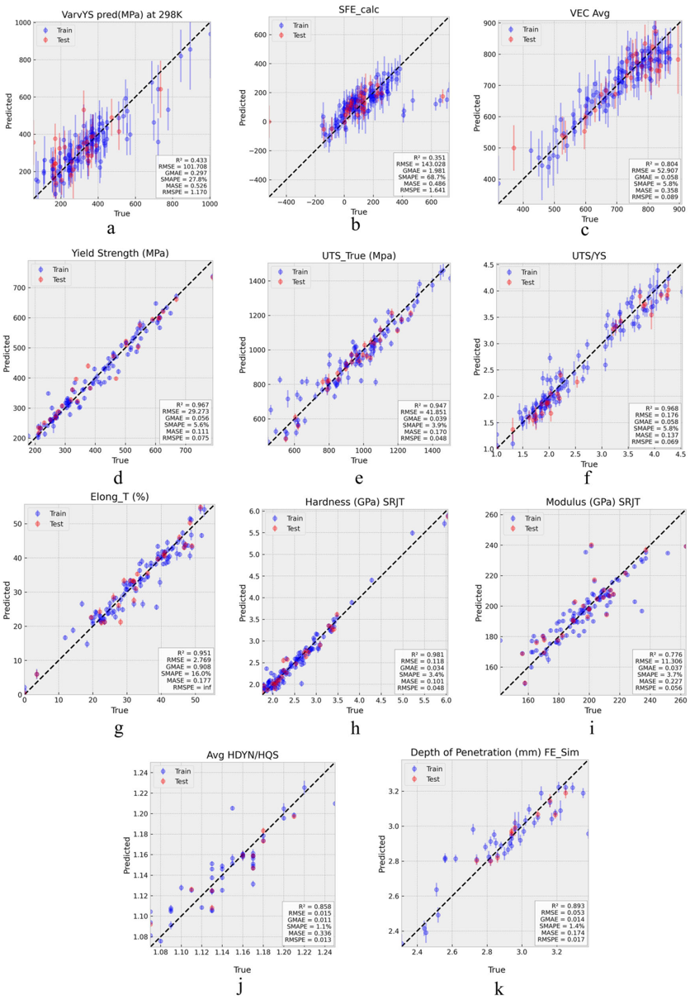
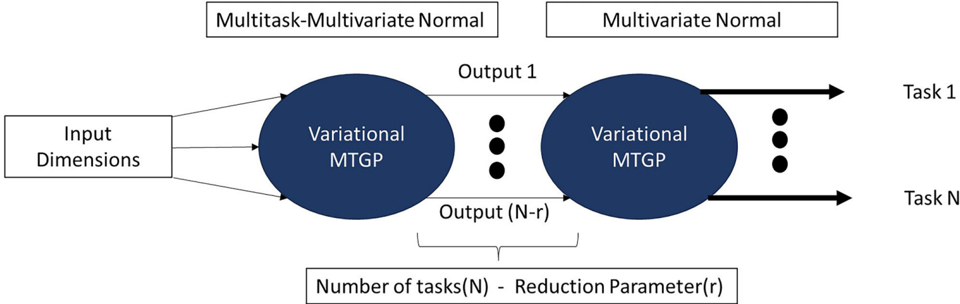
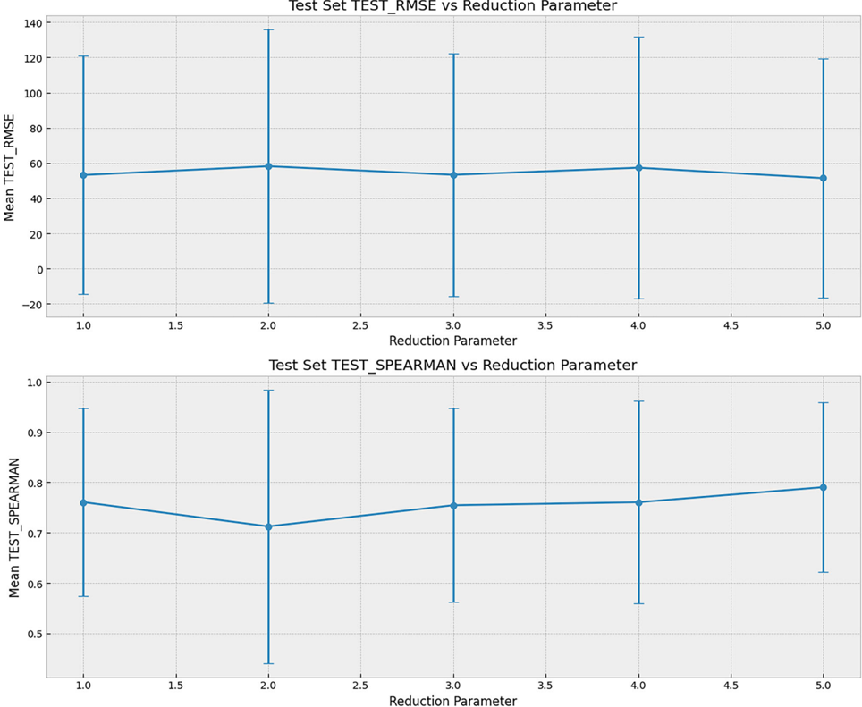

esumen Ejecutivo en Español
Título: Predicción multi-tarea precisa y con conciencia de la incertidumbre de propiedades de aleaciones de alta entropía (HEA) utilizando procesos gaussianos profundos guiados por información previa.
Objetivo Principal: Evaluar y comparar sistemáticamente el rendimiento de diferentes modelos sustitutos (surrogate models) para predecir múltiples propiedades mecánicas correlacionadas en el sistema de Aleaciones de Alta Entropía (HEA) de 8 elementos (Al-Co-Cr-Cu-Fe-Mn-Ni-V), utilizando un conjunto de datos híbrido que combina mediciones experimentales y predicciones computacionales.
Modelos Evaluados:
CGP: Proceso Gaussiano Convencional.
DGP: Proceso Gaussiano Profundo (una extensión jerárquica de los GP).
Encoder-Decoder: Red neuronal para regresión multi-salida.
XGBoost: Modelo basado en árboles de boosting.
Hallazgo Principal: El modelo DGP con información previa (HDGP-P-All) superó consistentemente a todos los demás modelos en la predicción de propiedades experimentales clave (como límite elástico, resistencia máxima, dureza, alargamiento y módulo). Su superioridad se debe a:
Arquitectura Jerárquica: Captura relaciones no lineales y complejas entre las propiedades.
Cuantificación de Incertidumbre: Proporciona estimaciones de confianza para sus predicciones, crucial para el diseño de materiales.
Manejo de Datos del Mundo Real: Es robusto frente a datos heteroscedásticos (ruido variable), heterotópicos (medidos en puntos diferentes) e incompletos.
Uso de Conocimiento Previo: La integración de un modelo "encoder-decoder" pre-entrenado como "información previa" guía al modelo y mejora significativamente las predicciones, especialmente en regiones con pocos datos.
Conclusión: Los modelos sustitutos jerárquicos y conscientes de la incertidumbre, como el DGP con información previa, son herramientas extremadamente potentes para acelerar el descubrimiento y optimización de materiales, ya que ofrecen alta precisión predictiva y una cuantificación fiable de la incertidumbre incluso con conjuntos de datos pequeños y ruidosos.
Traducción y Resumen Detallado por Secciones
1. Introducción
Contexto: Las Aleaciones de Alta Entropía (HEA) poseen un vasto espacio de diseño composicional, pero su exploración está limitada por la escasez de datos experimentales y las relaciones complejas entre composición y propiedades.
Problema: Se necesitan modelos sustitutos precisos y eficientes para predecir propiedades y guiar el descubrimiento de nuevas aleaciones.
Solución Propuesta: Este estudio compara cuatro tipos de modelos (CGP, DGP, Encoder-Decoder, XGBoost) en un conjunto de datos híbrido (experimental y computacional) del sistema HEA Al-Co-Cr-Cu-Fe-Mn-Ni-V.
Hipótesis: Los modelos DGPs, especialmente cuando se les dota de "información previa", pueden manejar mejor los desafíos comunes en la ciencia de materiales (datos ruidosos, incompletos y correlacionados) y ofrecer predicciones más robustas.
-
Métodos y Modelos
Conjunto de Datos (BIRDSHOT): Se utilizó un conjunto de datos de alta fidelidad con más de 100 composiciones de HEA, que incluye propiedades mecánicas medidas experimentalmente (límite elástico, dureza, módulo, etc.) y descriptores computacionales (Energía de Faula de Apilamiento - SFE, Concentración de Electrones de Valencia - VEC, etc.).
Modelos Evaluados:
CGP: Proceso Gaussiano estándar. Bueno para incertidumbre, pero no captura bien las correlaciones entre propiedades. DGP: Versión "profunda" y jerárquica del GP. Mejor para modelar no linealidades complejas y ruido dependiente de la entrada. Encoder-Decoder: Red neuronal que comprime la composición en un espacio latente y luego decodifica para predecir múltiples propiedades a la vez. Es determinista (sin incertidumbre nativa). XGBoost: Modelo de árboles potente para regresión, pero sin cuantificación de incertidumbre y que ignora las correlaciones entre propiedades.Innovación Clave: Se inyectó "información previa" a los modelos DGP utilizando las predicciones de un modelo Encoder-Decoder pre-entrenado. Esto permite al DGP enfocarse en aprender las "desviaciones" o "residuales" con respecto a esta predicción base, mejorando su rendimiento.
-
Resultados y Comparación
Rendimiento General: Los modelos DGP con información previa (HDGP-P-All y HDGP-P-Main) fueron los mejores en casi todas las propiedades experimentales clave, mostrando el menor error (RMSE, MAE) y el mayor coeficiente de determinación (R²).
Ventaja de la Información Previa: La inyección de información previa evita que el modelo prediga un valor constante en regiones con pocos datos, mejorando la generalización. La Figura 4 del artículo ilustra claramente esta ventaja.
Clasificación de Modelos:
Mejores: DGP con información previa (HDGP-P-All, HDGP-P-Main). Intermedios: DGP sin información previa (HDGP-NP-All, HDGP-NP-Main) y el modelo Encoder-Decoder. Peores: XGBoost y CGP. XGBoost carece de incertidumbre, y CGP no puede capturar correlaciones entre propiedades complejas.Interpretabilidad (SHAP): Un análisis SHAP en el mejor modelo (HDGP-P-All) reveló que el Aluminio (Al) y el Vanadio (V) son los principales contribuyentes positivos a la resistencia, mientras que el Cromo (Cr) y el Cobre (Cu) suelen afectar negativamente la resistencia pero pueden beneficiar la ductilidad, lo cual coincide con el conocimiento metalúrgico.
-
Discusión y Conclusión
El estudio demuestra que los Procesos Gaussianos Profundos (DGP), especialmente cuando se combinan con información previa de modelos de aprendizaje automático, son los sustitutos más potentes para problemas de diseño de materiales con datos complejos, escasos y ruidosos.
Su capacidad para cuantificar la incertidumbre y capturar correlaciones entre propiedades los hace ideales para aplicaciones de Optimización Bayesiana, donde guiar experimentos futuros de manera eficiente es fundamental.
Se recomienda el uso de estos modelos avanzados en campañas de descubrimiento de materiales para lograr un diseño más robusto y eficiente en el uso de datos.
Espero que este resumen y traducción sean de utilidad.
Figuras del Paper (11)

Sin caption
Figura en pagina 1.
Sin caption
Figura en pagina 1.
Sin caption
Figura en pagina 1.

Fig. 1 | Schematic overview of the BIRDSHOT data acquisition work fl ow. The dataset results from a multi-institutional effort combining alloy synthesis, mechanical testing across various strain rates (including nanoindentation, strain
Fig. 1 | Schematic overview of the BIRDSHOT data acquisition work fl ow. The dataset results from a multi-institutional effort combining alloy synthesis, mechanical testing across various strain rates (including nanoindentation, strain

Fig. 2 | Pairwise plot illustrating correlations between different experimental properties. This plot shows pairwise relations between yield strength, ultimate tensile strength, ratio of ultimate tensile strength and yield strength, elongation, hardness, modulus and ratio of hardness under dynamic and quasi-static conditions.
Fig. 2 | Pairwise plot illustrating correlations between different experimental properties. This plot shows pairwise relations between yield strength, ultimate tensile strength, ratio of ultimate tensile strength and yield strength, elongation, hardness, modulus and ratio of hardness under dynamic and quasi-static conditions.

Fig. 3 | Schematic representation of the two-layered variational deep Gaussian process (DGP) architecture with encoder-decoder based prior injection. Each variational multi-task Gaussian process (MTGP) layer reduces dimensionality from input to latent representation, governed by the reduction parameter.
Fig. 3 | Schematic representation of the two-layered variational deep Gaussian process (DGP) architecture with encoder-decoder based prior injection. Each variational multi-task Gaussian process (MTGP) layer reduces dimensionality from input to latent representation, governed by the reduction parameter.

Fig. 4 | The fi gure illustrates difference in fi tting performance for hardness between two DGP-all models. a Without prior injection, the points within the red circle are further from the actual value and b With prior injection, the points within the red circle tend to be closer to the actual value.
Fig. 4 | The fi gure illustrates difference in fi tting performance for hardness between two DGP-all models. a Without prior injection, the points within the red circle are further from the actual value and b With prior injection, the points within the red circle tend to be closer to the actual value.

Sin caption
Figura en pagina 10.

Fig. 6 | HDGP-P-All model results. a Predicted VarvYS at 298 K; b SFEcalculation; c AverageVEC; d Yield strength (MPa); e TrueUTS(MPa); f UTS/YSratio; g Elongation; h Hardness (GPa); i Modulus (GPa); j Average HDYN HQS; k Depth of penetration (mm).
Fig. 6 | HDGP-P-All model results. a Predicted VarvYS at 298 K; b SFEcalculation; c AverageVEC; d Yield strength (MPa); e TrueUTS(MPa); f UTS/YSratio; g Elongation; h Hardness (GPa); i Modulus (GPa); j Average HDYN HQS; k Depth of penetration (mm).

Fig. 7 | Schematic representation of the two-layered variational deep Gaussian process (DGP) architecture. Each variational multi-task Gaussian process (MTGP) layer reduces dimensionality from input to latent representation, governed by the reduction parameter.
Fig. 7 | Schematic representation of the two-layered variational deep Gaussian process (DGP) architecture. Each variational multi-task Gaussian process (MTGP) layer reduces dimensionality from input to latent representation, governed by the reduction parameter.

Fig. 8 | The fi gure illustrates RMSE and spearman rank coef fi cient for different reduction parameters. Figure at the top shows mean RMSE for test set over all tasks with respect to different reduction parameter for HDGP-NP-All. Bottom fi gure
Fig. 8 | The fi gure illustrates RMSE and spearman rank coef fi cient for different reduction parameters. Figure at the top shows mean RMSE for test set over all tasks with respect to different reduction parameter for HDGP-NP-All. Bottom fi gure